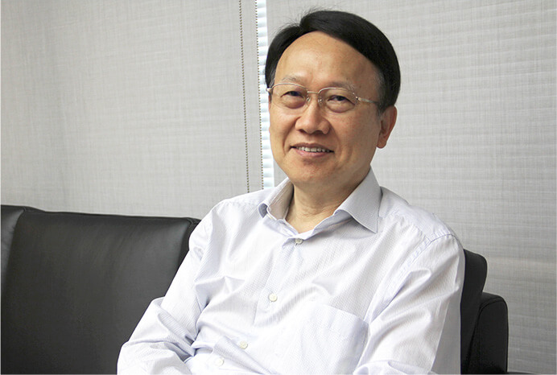

董事長的話
聚陽自成立以來，即秉持誠信、團隊、分享的企業價值觀，以專注務實的態度持續發展，同時聚陽也思考如何回饋社會，善盡企業責任。因此，聚陽除了將企業社會責任專案小組擴大成為跨部門的協作組織，並於 2016 年委託專業顧問公司進行輔導，採用全球永續性報告倡議組織發布的 GRI 準則，除充分揭露聚陽在企業社會責任的具體實踐成果，並將肩負起更多的永續發展責任。

公司治理：高營運績效，高透明度
聚陽成立至今即專注於核心事業 ( 服飾開發與生產 ) 的發展，近幾年並積極朝上游垂直整合，而透過各項的創新營運模式與策略佈局，不斷精進營運績效與獲利能力。
永續發展：環保愛地球的具體實踐
地球暖化已是全球關注的議題，聚陽也以實際的行動為台灣自然環境的保育而努力。從2016 年開始，聚陽與慈心基金會合作於台西海園進行「海岸種樹認養 3 年計畫」，聚陽同仁並身體力行，親至台西海園為木麻黃等海濱植物的幼苗撐起木頭支架，以提高種樹存活率，並藉此重建海岸植被，建立天然防風牆，並恢復土壤地力。
幸福企業：員工關懷、身心平衡
「專業經營、讓員工有歸屬感」是聚陽成立時的宗旨，如何塑造友善職場，建立健康、正向、樂活氛圍之工作環境，是聚陽努力的目標。
社會公益：聚陽分享愛，全員動起來
2017 年是聚陽公益啟航的一年，各部門輪流主辦公益活動，並從「人才教育」及「社會關懷」兩大面向規劃各項具體的活動，號召所有聚陽人一起參與。
董事長